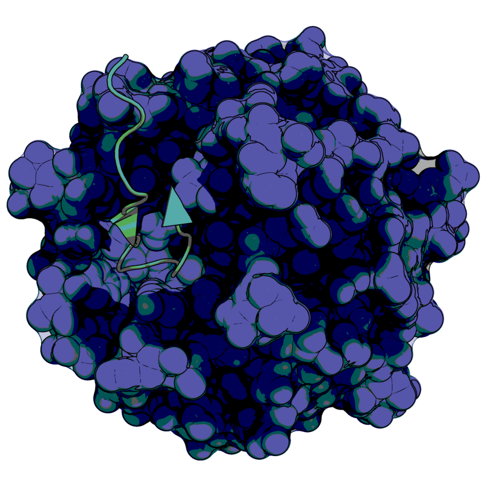

Megan
Chang
MSc., BMSc.

I earned my degrees from Western University in computational biochemistry
Specializing in molecular dynamics simulations of disordered proteins, data analyses, and science communication
Works
Uncovered the Conformational propensities of Nrf2's Neh4/5 domains and identified performance disparities between force fields
Chang, M.; Wilson, C. J.; Karunatilleke, N. C.; Moselhy, M. H.; Karttunen, M.; Choy, W.-Y. Exploring the Conformational Landscape of the Neh4 and Neh5 Domains of Nrf2 Using Two Different Force Fields and Circular Dichroism. J. Chem. Theory Comput. 2021, 17 (5), 3145–3156.
Explored the structural dynamics of KEAP1 Cancer mutants and their mutagenic effect
Wilson, C. J.; Chang, M.; Karttunen, M.; Choy, W.-Y. KEAP1 Cancer Mutants: A Large-Scale Molecular Dynamics Study of Protein Stability. Int. J. Mol. Sci. 2021, 22 (10), 5408.
Elucidated the structural and dynamical properties of Nrf2 and evaluated the capabilities of Molecular dynamics simulations
Countdown to thesis release from embargo
Chang, Megan Nicole, "Elucidating the Structural and Dynamical Properties of the Intrinsically Disordered Protein Nrf2 Using Molecular Dynamics Simulations" (2021). Electronic Thesis and Dissertation Repository. 8293.
About
I have an interest in uncovering proteins' roles in biological processes while presenting it in an engaging and effective manner
I strive to make science captivating for audiences by finding the intersection between science and design
